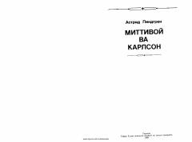

MVTomda yashovchi quvnoq va sho'x Karlson hamda Mittivoyning qiziqarli sarguzashtlari.
Ushbu mashhur ertak-qissa Stokgolm shahrida yashovchi Mittivoy laqabli bola va uning g'aroyib do'sti, tomda yashovchi Karlsonning sarguzashtlari haqida hikoya qiladi. Kitob bolalarga quvonch ulashib, ularni xushchaqchaqlikka va do'stlikka o'rgatadi.